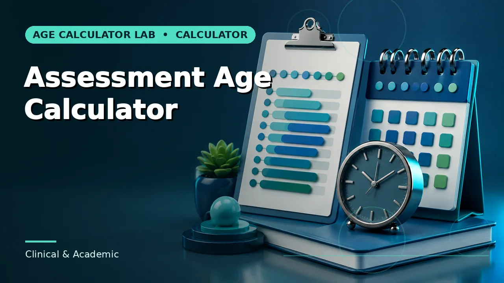
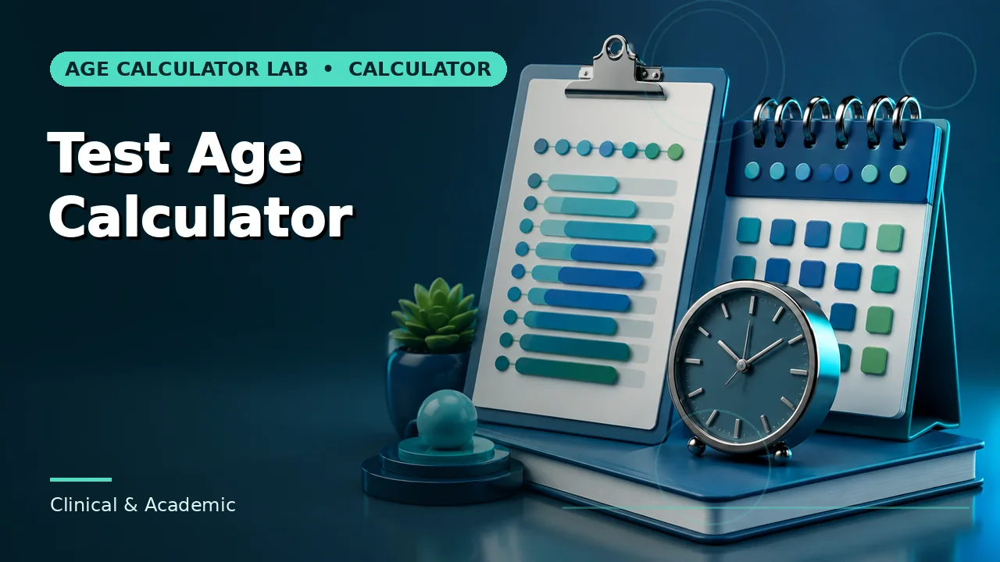

Quick answer
Calculate to the actual administration date, express the result in the format the manual specifies, and let the manual — not the calculator — decide the age rule.
Why the reference date carries the weight
Norm-referenced instruments compare a child against a sample of children of the same age. That comparison only holds if the age used to select the norm table is the age on the day the test was administered. A report written three weeks later, scored from an age calculated on the writing date, is being compared against the wrong band.
The arithmetic itself is rarely where things go wrong. Complete years, then complete months, then remaining days is a stable procedure. What goes wrong is the second date: a default of today left in place, a scoring date substituted for an administration date, or a referral date copied across because it was the one already in the file.
Use this guide with the right tool: Open the Chronological Age Calculator for chronological age on an assessment date. If the question shifts, compare it with the Assessment Age Calculator or the Test Age Calculator.
Age bands are narrower than people expect
Many instruments band by three or four months in the preschool range, where development moves fastest. A one-month error in chronological age can therefore move a child a full band, and near a boundary a single day can do it. The standard score that results is not slightly off; it is drawn from a different comparison group.
This is the practical argument for calculating exactly rather than approximately. Years and months alone are not enough when the boundary is defined in months and days, and rounding a partial month up or down before the band is selected is one of the more common sources of a score that cannot be reproduced.
Format is prescribed, not chosen
Most manuals specify how the age should be written — commonly years, months and days, often with a semicolon separator, sometimes zero-padded. That is not decoration. Scoring tables are indexed by that format, and a value written in a different one invites a transcription error at the point where it matters most.
Some instruments also specify a rounding convention for the days field, and those conventions differ between publishers and sometimes between instruments from the same publisher. Read the age instructions for the specific test in front of you rather than carrying a habit across from another one.
Multi-session testing
When administration spans more than one day, the governing date is whatever the manual says it is — commonly the first session, sometimes the session containing the relevant subtest, occasionally an institutional rule that overrides both. Inventing a midpoint is not a neutral compromise; it is an undocumented method.
If sessions are separated by enough time that the child's age band changes between them, that is worth noting in the report regardless of which date governs. A reader who reconstructs the calculation later should not have to guess why the age used does not match the date on the cover sheet.
What the calculator is for
It removes the arithmetic error: month lengths, leap years, and the borrow step that produces so many one-day mistakes. It gives the same answer every time from the same two dates, and the shareable result link means a colleague can open the exact calculation you ran.
It does not select norms, apply a publisher's rounding rule, decide which session date governs, or interpret a score. Those belong to the manual and to your professional judgement. Treat the output as a verified input to the scoring process, not as a step in it.
Worked example
None of this is difficult arithmetic. The part worth slowing down for is deciding which convention applies before you start.
Common mistakes to avoid
- Leaving today as the reference date. The administration date controls the band. A default left in place is the single most common cause of an unreproducible score.
- Rounding the days field before selecting norms. Apply the manual's rounding rule, at the point the manual specifies. Rounding early can move the band.
- Assuming one publisher's age rule applies across their range. Instruments from the same publisher can specify different administration and norm-table instructions. Check each one.
Use the right calculator
The calculators below apply exactly the method described here, with the assumptions visible on the page.


Frequently asked questions
Which date should I use if testing took several days?
Whichever the manual names. Where it is silent, follow your institution's documented rule and record which date you used and why.
Does the calculator apply a publisher's rounding convention?
No. It returns exact calendar age. Apply the manual's convention afterwards, so the adjustment is visible rather than buried.
Can I use this output directly in a report?
Use it as the verified arithmetic. Score selection, interpretation and any age adjustment remain professional judgements governed by the manual.